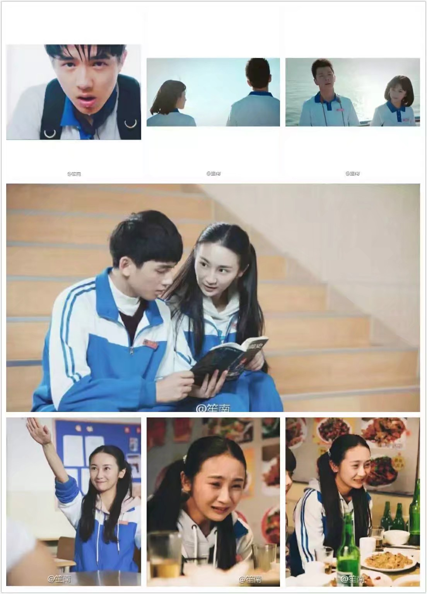
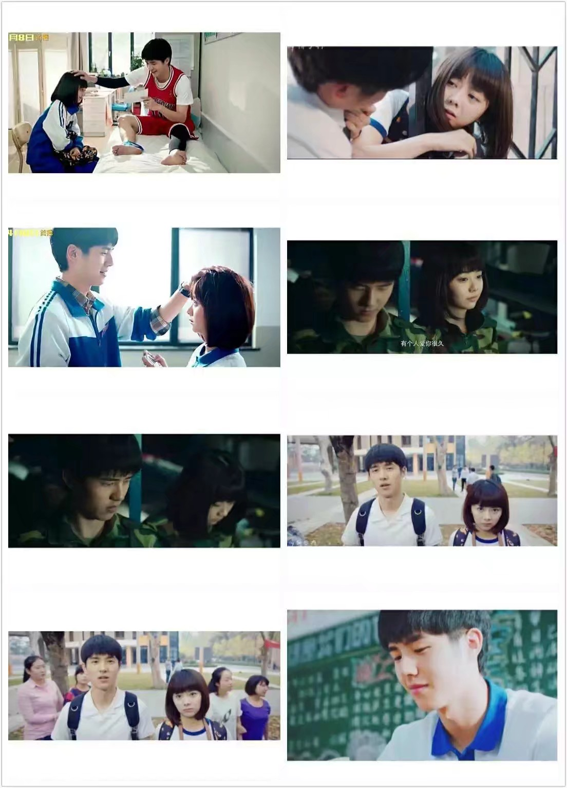
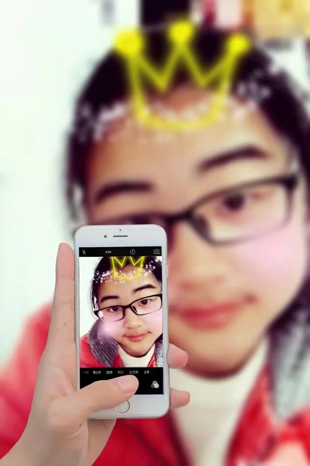

在这个特殊的日子里, 我没有别的话要说；
只想你知道，每年今天你都会收到这祝福；
愿所有的好运 、 所有快乐陪伴你左右；
生命中的每一天都青春靓丽， 勇敢面对；
希望你能早日遇到能给你快乐的那个他 ！
说了这么多废话还是希望你能好好的；
相识的这些过往点滴，我会好好珍惜；
绝不辜负未来的每一天；
我寄去了远方的祝福语思念；
希望你一切都好好的！
同样的地点：
你坐在我的前一排，我们相识，
正当青春期的我对异性有那么一点小心思，
我可能会故意想去和异性接触，
也可能是性格的问题-孤僻、回避，
渐渐的我就不想去改变现状，
如今我改变了很多，但回想起来，
我们的友谊好像淡了，
不时‘矫情’地感慨起来，不许取笑！
一个晴朗的日子，一个开学的日子，
只见学校门口堵了好长的车，
细数着每一天
渴望着赶紧度过大一，成为大二的学长！
来到了梦寐以求的高二，分了班，
我们不在一个班，
那些不想遇到的全都来了，什么？
对，你没有听错，苦逼的军训来了，
难以置信，却又不得不接收，
但，我打着演出参加训练的‘幌子’，
机智的我躲过了军训！
开始的紧张的学习，而我却不急不慢，
高二就开始了高考倒计时！
还是平淡如初
我迷上了网络游戏，
那些时光我每天晚上都会去网吧，
很多时候都是通宵，
从此就这样，一个网瘾少年‘诞生’了！
来到了高三，开始啦紧张的学习生活，
那段时间，遇到罕见的高温天气，
我每天打着去网吧凉快的幌子打游戏，
不知不觉，已无法自拔！
其实你还有其他的小伙伴都有劝过我，
我当时可能没把它当回事，就这样，
慢慢习惯了每天去网吧上网，
开学的时间，迎着有些刺骨的寒风，
妈妈送我来到了学校，并嘱咐我：
好好学习，听惯了那些习以为常的话，
渐渐的不知所措，不知道该做些什么，
人一旦失去目标是多么可怕，而我就是，
百日冲刺大会，班导找了我，
我知道我的现状，并严厉的说，
如果你再这样，我会告诉你家长，
可当时的我并不能控制我自己！
偶尔会在晚自习第二节下课约你出来，
漫步在青春广场的周围小道！
我们都在努力（不包括我）！
高考倒计时不足36天，
学校组织全体师生去太昊陵游玩，
高中将是我们每个人不能割舍，也最美好的记忆，
青春的我们也曾经迷茫过，但是我们一直一起面对，
对于未来，把记忆藏在最深处，把回忆留给我们自己，为了曾经的梦勇敢去追寻，
回忆中的曾经，曾经的回忆，一切都在心里不能抹去。


